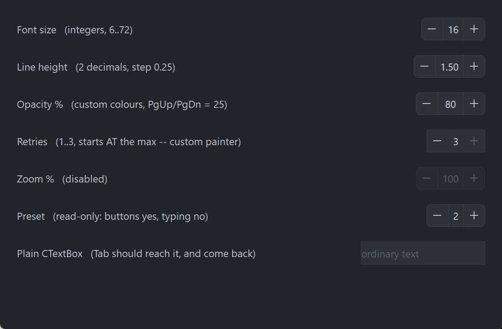

PsNumericUpDown
An owner-drawn numeric up/down control — a spinner — for FreeBASIC Win32 applications: a rounded frame holding a − button, an editable numeric field and a + button, separated by hairline dividers.
It is the control you reach for in a settings row, where the user picks a number and either nudges it a step at a time or types it outright. The value has a range, a settable number of decimal places and a settable increment; the buttons auto-repeat while held, the arrow keys, PgUp/PgDn and the mouse wheel all step it, and everything it draws is a colour you can set. There is no system control underneath the chrome, so nothing about its appearance depends on the visual style the user happens to be running.
The field in the middle is a real editing control — a PsTextBox in numeric mode, whose own child is a RichEdit. Typing, selection, the clipboard, paste validation, undo and the right-click menu all come from there rather than being reimplemented. That is what makes this control cheap to use, and it is what gives it the two obligations in the next section: three extra pairs of files, and one line in your message pump.
The control has no caption. It draws only the frame, the two buttons and the number, so a label goes beside it, positioned by you.
What it looks like

Seven rows: integers, two decimals with a 0.25 step, custom colours, a host-painted one sitting at its maximum so + paints disabled, a fully disabled one, a read-only one that still steps from its buttons, and a plain PsTextBox at the bottom that exists to prove Tab reaches past the spinner and comes back. The value field is a PsTextBox in numeric mode, so focus lives two levels down — GetFocus() = hCtrl is never true.
Requirements
Files to copy into your project:
| File | Purpose |
|---|---|
PsNumericUpDown.bi | Declarations — types, callbacks, constants, function prototypes |
PsNumericUpDown.inc | Implementation |
PsTextBox.bi | The editing control used as the value field |
PsTextBox.inc | Its implementation |
PsPopupMenu.bi | The value field's right-click menu |
PsPopupMenu.inc | Its implementation |
PsBufferPaint.bi | The flicker-free drawing surface everything paints through |
PsBufferPaint.inc | Its implementation |
An application that already hosts PsTextBox or PsPopupMenu has those files once already — they are the same files, and #include once means nothing is duplicated.
AfxNova is required. The control is built on CWindow, PsTextBox uses AfxNova\AfxRichEdit.inc, and CBufferPaint draws through AfxNova\CGdiPlus.inc. Sources include AfxNova relative to the workspace root (#include once "AfxNova\CWindow.inc"), so builds need the workspace root on the include path:
fbc64.exe -i "C:\dev" main.basInclude order. Each .bi pulls in what it needs, but the four implementation files must be included bottom-up:
#include once "PsBufferPaint.inc"
#include once "PsPopupMenu.inc"
#include once "PsTextBox.inc"
#include once "PsNumericUpDown.inc"GDI+ must be running before the first repaint and must outlive the last one. The control renders all of its geometry through GDI+, so bracket your message loop:
dim as ULONG_PTR gdipToken = AfxGdipInit()
' ... create windows, run the message loop ...
AfxGdipShutdown( gdipToken )AfxGdipShutdown must come after every window is destroyed, because each repaint builds and tears down a PsBufferPaint.
Never name an identifier ok. GDI+ defines Ok = 0 as a Status enum value in namespace AfxNova, and hosts customarily say using AfxNova. An existing variable, parameter or function called ok becomes a duplicate definition the moment you adopt these files. Use bOK instead.
The pump call is mandatory
PsNumericUpDown_FilterMessage is not optional. The value field carries PsTextBox's built-in Cut / Copy / Paste / Select All right-click menu, which is a PsPopupMenu and therefore not modal: its keyboard navigation and its dismissal on an outside click both live in a message filter.
do while GetMessage( @uMsg, null, 0, 0 )
if uMsg.message = WM_QUIT then exit do
if PsNumericUpDown_FilterMessage( @uMsg ) then continue do
TranslateMessage @uMsg
DispatchMessage @uMsg
loopLeave it out and the context menu still opens and still paints, but it cannot be driven from the keyboard and it never closes when the user clicks elsewhere. The function forwards to PsTextBox_FilterMessage, so an application already calling that one is covered either way and calling both is harmless.
Tab navigation needs nothing from you
The control is focusable, and Tab works without IsDialogMessage in your pump. PsTextBox handles VK_TAB itself, walking GetAncestor( GA_ROOT ) and GetNextDlgTabItem to move the focus on. A host that does run IsDialogMessage is fine too — the two do not fight.
What that walk needs is WS_EX_CONTROLPARENT on every window between the RichEdit and the top-level window. The container sets it on itself, which is the only reason tabbing works through the extra nesting level this control adds. Do not clear it.
Quick start
' Create it. The control is created zero-sized and hidden.
dim as HWND hSpin = PsNumericUpDown_Create( hWndParent, IDC_MYFORM_LINEHEIGHT )
PsNumericUpDown_SetFont( hSpin, ghFont(GUIFONT_10) )
' Be told when the user changes the value.
PsNumericUpDown_SetValueChangedCallback( hSpin, @MySpin_ValueChanged )
' Shape the value. Every one of these is silent — none fires the callback above.
' Set the decimal places and the range BEFORE the value: both of them rewrite
' whatever is already there.
PsNumericUpDown_SetDecimalPlaces( hSpin, 2 )
PsNumericUpDown_SetRange( hSpin, 0.5, 3.0 )
PsNumericUpDown_SetIncrement( hSpin, 0.25 ) ' buttons, arrows, one wheel notch
PsNumericUpDown_SetLargeIncrement( hSpin, 1.0 ) ' PgUp / PgDn
PsNumericUpDown_SetValue( hSpin, 1.5 )
' Ask how big it wants to be, then place it. GetIdealSize is valid immediately,
' before the control has ever been sized.
dim as long iw, ih
PsNumericUpDown_GetIdealSize( hSpin, iw, ih )
SetWindowPos( hSpin, 0, x, y, iw, ih, SWP_NOZORDER )
ShowWindow( hSpin, SW_SHOW )And the callback:
sub MySpin_ValueChanged( byval hCtrl as HWND, byval nValue as double )
' Fired only for user action. The value is already clamped, snapped and
' displayed, so PsNumericUpDown_GetValue( hCtrl ) = nValue.
gConfig.LineHeight = nValue
end subThat, plus the PsNumericUpDown_FilterMessage line in your pump, is the whole minimum. Everything below is refinement.
Concepts
The handle is a real HWND
PsNumericUpDown_Create returns an ordinary window handle, and every PsNumericUpDown_* function takes it. It is not an opaque type, so you can treat the control as the window it is — SetWindowPos to place and size it, ShowWindow to show it, GetDlgItem to find it by the CtrlID you passed at creation.
It is created zero-sized and hidden
PsNumericUpDown_Create gives the container the styles WS_CHILD, WS_CLIPSIBLINGS and WS_CLIPCHILDREN, plus the extended style WS_EX_CONTROLPARENT. WS_VISIBLE is deliberately absent, so a newly created control shows nothing until you size it and call ShowWindow. That lets you build and configure a control before it is ever seen.
The container itself is not a tabstop; the RichEdit inside it is.
The value field is an embedded PsTextBox
The window tree is three deep:
PsNumericUpDown container WS_EX_CONTROLPARENT
+-- PsTextBox borderless: this control owns all the chrome
+-- RichEdit50W WS_TABSTOP — the real focus targetThe PsTextBox is created borderless, in numeric mode, centred, with its margins taken from the value padding and with "an empty buffer reads as zero" turned on. PsNumericUpDown_GetTextBoxHandle is the escape hatch: every PsTextBox_* setter applies to it — cue banner, text limit, context-menu theming, and so on.
Three PsTextBox setters are owned by this control and must not be set behind its back:
| Setter | Why not |
|---|---|
PsTextBox_SetValue | Use PsNumericUpDown_SetValue, or the committed value and the buttons' at-a-limit state go stale |
PsTextBox_SetDecimalPlaces | Use PsNumericUpDown_SetDecimalPlaces, for the same reason |
PsTextBox_SetBorderWidth | Anything nonzero draws a second frame inside this control's own |
Focus lives two levels down
GetFocus() = hCtrl is never true. Keyboard focus sits on the RichEdit, two windows below the handle you hold, so the obvious test always answers FALSE. Use PsNumericUpDown_HasFocus( hCtrl ), which asks the right window.
SetFocus( hCtrl ) does work and means what you expect — the container hands the focus straight down to the RichEdit rather than swallowing it.
Focus is shown by recolouring the frame in FocusBorderColor. There is no separate focus ring and therefore no reserved ring band, so the control's ideal size does not change when focus arrives and nothing shifts sideways when you Tab onto it.
Arriving by Tab selects the whole number, so the first keystroke replaces it. Arriving by clicking a button deliberately does not, so the number is not left highlighted after every click of +.
Geometry is derived, never assigned
The control computes nine rectangles and owns all nine. You influence them through the layout setters; you never write them.
rcFrame = the whole client (the rounded border is stroked INSIDE it, over the cells)
rcMinus = client.left .. client.left + buttonWidth
rcDiv1 = rcMinus.right .. + dividerThickness
rcPlus = client.right - buttonWidth .. client.right
rcDiv2 = rcPlus.left - dividerThickness .. rcPlus.left
rcValue = rcDiv1.right .. rcDiv2.left, inset top and bottom by borderThickness
rcMinusBar = glyphLength x glyphThickness, centred in rcMinus
rcPlusBarH = glyphLength x glyphThickness, centred in rcPlus
rcPlusBarV = glyphThickness x glyphLength, centred in rcPlusTwo things in there are worth knowing before you write a paint callback:
The cells are not deflated by the border. The button cells span the full client height and reach the client edge, and the frame's outline is stroked over their outer edges last. A cell inset by the border width would round its own corners a pixel inside the frame's, leaving a sliver of the base fill showing through whenever a hovered button's colour differs from it.
rcValue alone is inset, and only vertically, by exactly the border thickness. It is the one rect a child window covers: the PsTextBox sits exactly on it and paints its own background there, so a full-height value cell would put the child on top of the frame's top and bottom rows and the border would be interrupted across the middle of the control.
Both + bars are centred on the same cell centre rather than one being derived from the other, so the cross is exactly symmetric whatever the parity of the cell and the bar.
Layout is lazy. A setter marks the layout stale and asks for a repaint; the next paint — or any rect query — recomputes it. There is no begin-update / end-update pair to remember, and setting six properties in a row costs one layout pass, not six.
Laying out takes no device context. Nothing in the cells is measured — every number is either authored or derived from the client rect, and the number on screen is measured by the RichEdit. PsNumericUpDown_GetIdealSize is the one place this control measures anything, and it opens its own DC to do it.
The ideal size is measured from the range
PsNumericUpDown_GetIdealSize formats both ends of the range at the current decimal places, measures them in the current font, takes the wider, and adds the padding, both buttons, both dividers and the border:
width = 2*buttonWidth + 2*dividerThickness + padLeft + padRight + widestValueText
height = fontHeight + 2*vertPadding + 2*borderThicknessBoth ends, because -1000 is wider than 999 and a range that never goes negative should not pay for a minus sign it will never draw. Because it measures rather than consulting the layout, it is valid before the control has ever been sized — which is exactly when a host calls it.
Pixels, and who scales them
Only the creation-time defaults are DPI-scaled for you:
| Setting | Default | DPI-scaled at create? |
|---|---|---|
| Button width | 28 | Yes |
| Value padding, left and right | 6 | Yes |
| Vertical padding | 5 | Yes |
| Corner radius | 6 | Yes |
| Glyph length | 10 | Yes |
| Glyph thickness | 1 | Yes |
| Border thickness | 1 | No |
| Divider thickness | 1 | No |
Every setter afterwards takes raw pixels and expects you to scale — typically pWindow->ScaleX(...) / ScaleY(...).
The glyph thickness is scaled and the two hairlines are not, and the asymmetry is deliberate. The border and the divider are rules, and a rule that thickens with the display stops reading as a rule. The bars of the − and the + are not rules, they are the strokes of an icon: scale an icon's length but not its weight and it grows thinner relative to itself at every step up in DPI, until the minus sign reads as a thread rather than a glyph.
Stepping, clamping and the decimal grid
Every step — button, arrow key, PgUp/PgDn, wheel, StepUp/StepDown, SetValue — goes through the same two operations, in this order:
- Snapped to the decimal grid, not merely rounded for display. Adding
0.1ten times to a binary double lands on0.9999999999999999, and a value a hair below the grid formats correctly while comparing wrong — so the drift would stay invisible until a range check at a limit disagreed with the number on screen. - Clamped into
[min, max]. The range clamps; it never wraps. A button that can no longer move the value paints disabled while the rest of the control stays live.
A step starts from what is in the field, not from the last committed value, so typing 50 and then clicking + gives you 51. Out-of-range typed text is clamped on the way in, so a step always starts from a legal value.
Who notifies, and when
This is the part most worth reading twice. The change callback reports user action only, and the timing differs by input:
| Input | When ValueChangedCallback fires |
|---|---|
− or + button click | Immediately — the step happens on the button-down |
| Auto-repeat tick | Immediately, once per step |
| Up / Down arrow in the field | Immediately |
| PgUp / PgDn in the field | Immediately |
| Mouse wheel | Immediately, once accumulated deltas complete a whole notch |
| Typing | On commit only — ENTER, or focus leaving the field |
SetValue, SetRange, SetDecimalPlaces, StepUp, StepDown | Never |
Typing 16 therefore never reports the transient 1. Commit is also when the typed text is clamped, snapped and reformatted, which is what turns 5. into 5.00.
Because every programmatic setter is silent, it is safe to call one from inside your own change handler without recursing. This follows Win32's own BM_SETCHECK / BN_CLICKED split.
PsNumericUpDown_GetValue returns the committed value. While the user is mid-typing it still reports the last committed number, and so does the buttons' at-a-limit appearance — they still step correctly from what was typed.
How a button press works
The value steps on the button-down, not on the release. It has to: auto-repeat must start from somewhere, and a first step deferred to the release would arrive after the repeats it precedes. Every real spinner behaves this way, and it means sliding off a button does not undo the step that already happened.
The control takes mouse capture for the press anyway, and what capture buys here is the repeat, not a press/cancel gesture:
- the repeat stops the moment the cursor leaves the button, and resumes — after the full delay again, so a wobbling cursor cannot machine-gun the value — if it comes back;
- the up-message is guaranteed to arrive, wherever the cursor has wandered to, so the repeat timer can never outlive the gesture.
Repeating starts after nDelayMs and then ticks every nIntervalMs. It stops dead when the value reaches a limit rather than spinning against the clamp. Either timing value at or below zero disables repeating entirely: one click, one step.
The wheel steps by one increment per notch
Sub-notch deltas accumulate, so a slow precision-touchpad swipe is not truncated away to nothing. SPI_GETWHEELSCROLLLINES is deliberately not consulted — "how many lines does one notch scroll" is a question about scrolling a view, and this is a value, not a view. One notch is one increment, and you control the feel through PsNumericUpDown_SetIncrement.
Wheel messages go to the focused window, so most of them arrive at the RichEdit. The container catches the other case: Windows' "scroll inactive windows" setting, on by default, delivers the wheel to whatever is under the cursor, which is the container when the pointer is over a button.
Enabling, disabling and read-only
They are different statements, and both are available.
PsNumericUpDown_SetEnabled( hCtrl, false ) calls EnableWindow on both the container and the PsTextBox. A disabled window receives no mouse input at all, and disabling only the container would leave the field itself enabled, where a programmatic SetFocus could still drop a caret into a control that looks dead. If you call EnableWindow on the control directly, the control notices and greys itself, so the two routes cannot disagree.
PsNumericUpDown_SetReadOnly( hCtrl, true ) stops typing only. The buttons, the arrow keys, PgUp/PgDn and the wheel all keep working. It says "you may not type an arbitrary number here", which is not the same as "this control is inert".
Lifetime
The control frees itself when its window is destroyed, taking the PsTextBox with it. It owns no host resources — in particular the font is caller-owned and is never deleted. Destroy the parent and you are done.
Behaviour and limits
Firm properties of the control, not settings:
- The pump call is mandatory. Without
PsNumericUpDown_FilterMessage, the value field's right-click menu has no keyboard navigation and never closes on an outside click. GetFocus() = hCtrlis never true. Focus lives on the RichEdit two levels down; usePsNumericUpDown_HasFocus.WS_EX_CONTROLPARENTon the container is load-bearing.PsTextBox's ownVK_TABwalk only sees through a container that declares itself one, so clearing it breaks tabbing into and out of the value field.- The range clamps; it never wraps. A button at a limit paints disabled, and auto-repeat stops there.
- Every step snaps to the decimal grid, not just on display.
- The control can never be blank. With a range there is no "no value" state to represent, so an empty field reads as zero and is then clamped.
- The step happens on the button-down. Pressing a button and sliding off before releasing does not undo it.
- Double-clicks are not special.
CS_DBLCLKSis deliberately off, so a rapid second click arrives as an ordinary down/up pair and steps again. With it on, the second of two rapid clicks would arrive asWM_LBUTTONDBLCLKand a user double-clicking+to add two would get one. - Home and End are not claimed. They move the caret to the start and end of the text. Stealing them for min/max would break ordinary editing in a field the user can type into.
- The value cell is reported by
HitTestbut never acted on. That area is covered by thePsTextBoxchild, which receives its own mouse messages and never routes them to the container, so in practice onlyNUD_PART_MINUSandNUD_PART_PLUSare reachable through a real mouse message. - No tooltip support. There is no tooltip callback and no tooltip window is created. If you want a tip, add your own tool over the control's
HWND. - The right mouse button is reported by the container, never acted on. The value field has its own context menu; the buttons have none, and inventing one is your business. No capture is taken for the right button, so a right-up can arrive without a matching down.
- When the control is too narrow for both buttons and both dividers, the value cell collapses to zero width and the buttons keep their size, clipping at the client edge. Rects are computed honestly rather than squeezed, so the buttons stay square and only what is past the edge is lost.
rcValueis never allowed to invert, and a collapsed value cell hides the child rather than handing it a degenerate rect. - A paint callback replaces the frame, the cells, the dividers and the glyphs — never the number. The RichEdit paints that over
rcValueafterwards, whatever the callback drew there, andWS_CLIPCHILDRENkeeps the child's rect out of the callback's DC anyway. - A primitive that fills a rect covering the whole control erases everything under it. See the warning under Paint.
API reference
Creation
| Function | Description |
|---|---|
PsNumericUpDown_Create( hWndParent, CtrlID ) as HWND | Creates the control as a child of hWndParent and returns its window handle. CtrlID becomes the window's GWLP_ID, so GetDlgItem finds it. Created zero-sized and hidden — size it with PsNumericUpDown_GetIdealSize, place it with SetWindowPos, then ShowWindow. |
PsNumericUpDown_HasFocus( hCtrl ) as boolean | TRUE while the value field owns the keyboard focus. Use this, not GetFocus — focus sits on the RichEdit two levels down, so GetFocus() = hCtrl is always FALSE. |
PsNumericUpDown_GetEnabled( hCtrl ) as boolean | The control's enabled state. |
PsNumericUpDown_SetEnabled( hCtrl, isEnabled ) | Enables or disables through EnableWindow, on the container and on the embedded PsTextBox, so input really stops and no SetFocus can sneak in. Disabling clears any hover and cancels a live press and its repeat. Does not change the value. |
PsNumericUpDown_Refresh( hCtrl ) | Marks the layout stale, requests a repaint with background erase, and re-places the child. Rarely needed — every setter does this for you. |
PsNumericUpDown_FilterMessage( pMsg as MSG ptr ) as boolean | Call this in your message pump. Returns TRUE when the message was consumed by the value field's context menu, in which case skip TranslateMessage/DispatchMessage for it. Forwards to PsTextBox_FilterMessage, so calling both is harmless. |
Value and range
Every setter here is silent — none fires the change callback.
| Function | Description |
|---|---|
PsNumericUpDown_GetValue( hCtrl ) as double | The committed value. While the user is mid-typing this is still the last committed number. |
PsNumericUpDown_SetValue( hCtrl, nValue ) | Snaps to the decimal grid, clamps into the range, displays it and records it. What you set is what GetValue returns and what is on screen. |
PsNumericUpDown_GetRange( hCtrl, byref nMin, byref nMax ) | The current range. |
PsNumericUpDown_SetRange( hCtrl, nMin, nMax ) | Sets the range. An inverted pair is swapped, not rejected — the alternative is a control whose clamp can never be satisfied and that pins to the minimum on every step. Re-clamps the current value, silently. |
PsNumericUpDown_GetDecimalPlaces( hCtrl ) as long | Digits after the decimal point; 0 means integers only. |
PsNumericUpDown_SetDecimalPlaces( hCtrl, nPlaces ) | Sets the grid the value snaps to and the format it displays in. A negative count is floored at 0. Re-snaps the current value onto the new grid, silently — 16.25 at 2 places becomes 16 at 0. Reaches the embedded PsTextBox too, which is what makes the field refuse a typed decimal separator outright at 0 places. |
Set the decimal places and the range before the value: each of them rewrites whatever is already there.
Stepping
| Function | Description |
|---|---|
PsNumericUpDown_GetIncrement( hCtrl ) as double | The step used by the buttons, the Up/Down arrows and one wheel notch. Default 1. |
PsNumericUpDown_SetIncrement( hCtrl, nIncrement ) | Sets it. Takes the magnitude — a negative increment is stored as its absolute value, so − always goes down. |
PsNumericUpDown_GetLargeIncrement( hCtrl ) as double | The step used by PgUp and PgDn. Defaults to ten times the increment default. |
PsNumericUpDown_SetLargeIncrement( hCtrl, nIncrement ) | Sets it; also takes the magnitude. |
PsNumericUpDown_StepUp( hCtrl ) | Adds one increment to whatever is in the field, snapped and clamped. The programmatic door to exactly what the + button does — minus the notification. |
PsNumericUpDown_StepDown( hCtrl ) | The same, downwards. Also silent. |
PsNumericUpDown_GetAutoRepeat( hCtrl, byref nDelayMs, byref nIntervalMs ) | The hold-to-repeat timings, in milliseconds. Defaults 400 and 60. |
PsNumericUpDown_SetAutoRepeat( hCtrl, nDelayMs, nIntervalMs ) | Sets them. Either value at or below zero disables repeating (one click, one step) and stops any repeat already running. Repeating also stops on its own the moment the value reaches a limit. |
The value field
| Function | Description |
|---|---|
PsNumericUpDown_GetTextBoxHandle( hCtrl ) as HWND | The embedded PsTextBox, so any PsTextBox_* setter can be applied to it — cue banner, text limit, context-menu theming. Do not call PsTextBox_SetValue, PsTextBox_SetDecimalPlaces or PsTextBox_SetBorderWidth on it: the first two go stale against this control's committed value, and the third draws a second frame inside this one's. |
PsNumericUpDown_GetReadOnly( hCtrl ) as boolean | TRUE when typing is blocked. |
PsNumericUpDown_SetReadOnly( hCtrl, bReadOnly ) | Blocks typing only. The buttons, the arrow keys, PgUp/PgDn and the wheel keep working. For a genuinely inert control use PsNumericUpDown_SetEnabled. |
PsNumericUpDown_GetFont( hCtrl ) as HFONT | The font the value is drawn in. |
PsNumericUpDown_SetFont( hCtrl, hFont ) | Hands the font to the PsTextBox and re-lays-out. Caller-owned — the control converts nothing and deletes nothing, so you keep ownership of the HFONT and must free it yourself. This font is also what GetIdealSize measures in; with none set it measures in DEFAULT_GUI_FONT. |
Geometry and layout
All setters take raw pixels; you do the DPI scaling. Each marks the layout stale and requests a repaint.
| Function | Description |
|---|---|
PsNumericUpDown_GetButtonWidth( hCtrl ) as long | The width of each of the two button cells. |
PsNumericUpDown_SetButtonWidth( hCtrl, nWidth ) | Sets it; clamped to a minimum of 0. Both buttons share one width. |
PsNumericUpDown_GetValuePadding( hCtrl, byref nLeft, byref nRight, byref nVert ) | The text margins inside the value cell, and the vertical padding. |
PsNumericUpDown_SetValuePadding( hCtrl, nLeft, nRight, nVert ) | Each clamped to a minimum of 0. nLeft/nRight are real text margins, pushed into the field. nVert is used only by GetIdealSize, to decide the height around one line of text — it insets nothing. |
PsNumericUpDown_GetCornerRadius( hCtrl ) as long | The frame's corner radius. |
PsNumericUpDown_SetCornerRadius( hCtrl, nRadius ) | Sets it; clamped to a minimum of 0, where 0 gives square corners. |
PsNumericUpDown_GetBorderThickness( hCtrl ) as long | The frame outline's thickness. |
PsNumericUpDown_SetBorderThickness( hCtrl, nThickness ) | Sets it; clamped to a minimum of 0, where 0 means no frame at all. This value also insets the value cell vertically, so changing it moves the child. Do not DPI-scale it. |
PsNumericUpDown_GetDividerThickness( hCtrl ) as long | The hairline between each button and the value cell. |
PsNumericUpDown_SetDividerThickness( hCtrl, nThickness ) | Sets it; clamped to a minimum of 0, where 0 draws no dividers — and, being zero-width, takes no space either, since the cells and dividers tile the client width exactly. Do not DPI-scale it. |
PsNumericUpDown_GetGlyphSize( hCtrl, byref nLength, byref nThickness ) | The bar of the − (and each bar of the +), and its stroke weight. |
PsNumericUpDown_SetGlyphSize( hCtrl, nLength, nThickness ) | Sets both; each floored at 1, so a degenerate glyph becomes a 1×1 dot rather than nothing at all. Unlike the two hairlines, this thickness should be DPI-scaled — it is an icon stroke. |
PsNumericUpDown_GetIdealSize( hCtrl, byref nWidth, byref nHeight ) | The size that fits the widest value the range can produce at the current decimal places, in the current font, plus the padding, both buttons, both dividers and the border. Measures both ends of the range. Opens its own DC, so it is valid before the control has ever been sized. |
PsNumericUpDown_GetFrameRect( hCtrl, byref rc ) as boolean | The frame — the whole client area. |
PsNumericUpDown_GetMinusRect( hCtrl, byref rc ) as boolean | The − button cell. Spans the full client height: the cells are not deflated by the border. |
PsNumericUpDown_GetValueRect( hCtrl, byref rc ) as boolean | The value cell — where the PsTextBox child sits exactly. The one rect inset by the border, and only vertically. |
PsNumericUpDown_GetPlusRect( hCtrl, byref rc ) as boolean | The + button cell. |
PsNumericUpDown_HitTest( hCtrl, pt ) as long | Which NUD_PART_* is under a point in client coordinates, or NUD_PART_NONE outside the cells. NUD_PART_VALUE is reported for completeness; the control never acts on it. |
The four rect queries force any pending layout first, so their results are always current. Each returns FALSE — leaving rc empty — when the control has no client area yet, which is the case between PsNumericUpDown_Create and the first SetWindowPos.
Appearance
| Function | Description |
|---|---|
PsNumericUpDown_GetColors( hCtrl, pColors as PSNUMERICUPDOWN_COLORS ptr ) | Fills your struct with the control's current colours. |
PsNumericUpDown_SetColors( hCtrl, pColors as PSNUMERICUPDOWN_COLORS ptr ) | Copies the whole struct in, pushes the value cell's colours into the embedded PsTextBox, and repaints. |
To change one colour, read-modify-write:
dim as PSNUMERICUPDOWN_COLORS clrs
PsNumericUpDown_GetColors( hSpin, @clrs )
clrs.ButtonBackColorHot = BGR( 62,140, 90)
clrs.ButtonBackColorPressed = BGR( 42,100, 64)
clrs.FocusBorderColor = BGR(120,200,150)
PsNumericUpDown_SetColors( hSpin, @clrs )Callback registration
| Function | Description |
|---|---|
PsNumericUpDown_SetPaintCallback( hCtrl, usersub ) | Installs a renderer that draws the frame, the cells, the dividers and the glyphs instead of the built-in painter. Repaints. It never draws the number. |
PsNumericUpDown_SetMessageCallback( hCtrl, userfunc ) | Installs an observer for the container's mouse and timer messages and the value field's relayed key, wheel and focus messages. |
PsNumericUpDown_SetValueChangedCallback( hCtrl, usersub ) | Installs the handler told when the user changes the value. |
All three are optional and independent.
Colors
The colour surface is one flat struct, PSNUMERICUPDOWN_COLORS, with eighteen COLORREF fields. Every field ships with a usable dark-theme default, so a control you never call PsNumericUpDown_SetColors on still looks right.
| Field | Paints |
|---|---|
BackColor | The control's own client area — visible only outside the rounded corners |
BorderColor | The frame outline, idle |
FocusBorderColor | The frame outline while the value field has focus |
BorderColorDisabled | The frame outline when the control is disabled |
DividerColor | The two hairlines, idle |
DividerColorDisabled | The two hairlines when the control is disabled |
ValueBackColor | The value cell's background — and the frame's base fill |
ValueForeColor | The number itself |
ValueBackColorDisabled | The value cell's background when disabled — and the frame's base fill |
ValueForeColorDisabled | The number when disabled |
ButtonBackColor | A button cell, idle |
ButtonBackColorHot | A button cell, mouse over |
ButtonBackColorPressed | A button cell, held down with the cursor still on it |
ButtonBackColorDisabled | A button cell, disabled or at its limit |
GlyphColor | The − / + bars, idle |
GlyphColorHot | The bars, mouse over |
GlyphColorPressed | The bars, pressed |
GlyphColorDisabled | The bars, disabled or at the limit |
The four Value* fields are handed to the embedded PsTextBox rather than painted by this control — the RichEdit draws the number. They live in this struct so that you set every colour of the control in one place. They are re-applied whenever the enabled state changes.
Which colour wins
For each button cell, the built-in painter picks one background and one glyph colour per repaint, in this precedence:
disabled > pressed > hot > idlewhere disabled means either the whole control is disabled or this particular button is at its limit. A button that can no longer move the value greys itself while the rest of the control stays live; that is the only per-part state in the renderer.
"Pressed" means held down and the cursor still on that button. Slide off during a press and the button stops painting pressed — without the step being undone.
The frame outline has its own three-way precedence:
disabled > focused > idleWhy the control reads as one flat cell at rest
ButtonBackColor defaults equal to ValueBackColor, so at rest the dividers are the only thing separating the three parts and the control reads as a single rounded cell that only sprouts buttons when you hover it. If you want visibly raised buttons, set the field.
What the painter draws
The paint order is load-bearing, and it is what keeps the corners round:
| Step | What |
|---|---|
| 1 | The client, in BackColor — shows through outside the rounded corners |
| 2 | The whole frame, as a filled round rect in the value background colour. This is what makes the corners round, and it is also the value cell's background for the strip above and below the child |
| 3 | Each button cell, as a filled round rect extended inward past the divider, so its unwanted inner rounding lands somewhere harmless and only the outer, wanted rounding survives |
| 4 | The dividers and the glyphs, as filled rectangles — an antialiased one-pixel axis-aligned rule comes out grey and blurry, so antialiasing is reserved for curves |
| 5 | The frame outline last, over everything |
All of it goes through PsBufferPaint, which renders geometry with GDI+, so the frame's corners are antialiased. A paint callback gets that same buffer and inherits the same primitives.
Callbacks
Value changed
type NUD_ValueChangedCallbackSub as sub( byval hCtrl as HWND, byval nValue as double )The user changed the value. Fires after the value has been clamped, snapped and displayed, so PsNumericUpDown_GetValue( hCtrl ) already equals nValue.
See Who notifies, and when for the timing table. In short: immediately for a button, an auto-repeat tick, an arrow key, PgUp/PgDn and the wheel; on commit only for typing; never for a programmatic setter.
That last part is what makes it safe to call PsNumericUpDown_SetValue from inside this handler.
Paint
type NUD_PaintCallbackSub as sub( byval p as PSNUMERICUPDOWN_PAINTINFO ptr )Draws the frame, the cells, the dividers and the glyphs instead of the built-in painter. Paint through p->b, the control's double buffer for this repaint — do not touch the screen DC.
The control has already filled the client with BackColor before calling you, so a callback that only wants to add something on top does not have to repaint the background.
It does not draw the number. The RichEdit paints that over rcValue afterwards, whatever you drew there.
PSNUMERICUPDOWN_PAINTINFO carries everything you need:
| Field | Meaning |
|---|---|
hCtrl | The control, so the callback can query it |
b | The control's PsBufferPaint for this repaint (borrowed, not owned) |
rcClient | The whole client area |
rcFrame | Where the rounded border is stroked |
rcMinus | The left button cell |
rcDiv1 | The hairline between the − cell and the value cell |
rcValue | The value cell — the PsTextBox child sits exactly here |
rcDiv2 | The hairline between the value cell and the + cell |
rcPlus | The right button cell |
rcMinusBar | The − glyph |
rcPlusBarH | The + glyph, horizontal bar |
rcPlusBarV | The + glyph, vertical bar |
hotPart | NUD_PART_* under the cursor, or NUD_PART_NONE |
pressedPart | NUD_PART_* held down and the cursor still inside, or NUD_PART_NONE |
isEnabled | The control's enabled state |
isFocused | The value field owns the keyboard focus — draw the focus-coloured frame |
bAtMin | The − button can do nothing: draw it disabled |
bAtMax | Likewise the + button |
nValue | The current value, already clamped and snapped |
Every rect is precomputed. Use them as given — in particular, never re-derive a glyph bar from its cell by repeating the centring arithmetic, because PsNumericUpDown_SetGlyphSize can change it underneath you.
bAtMin / bAtMax are how a callback gets the at-a-limit greying without having to know anything about the range.
A primitive that fills a rectangle covering the whole control will erase everything under it. Anything that fills and strokes —
PaintBorderRect,PaintRoundBorderRect— fills with the current back colour unconditionally; only the stroke is conditional. Used as a frame, over pixels you have already drawn, it floods the lot and leaves a solid block with only the RichEdit's number showing through, while still reporting no error and still passing every check that looks at geometry. UsePaintRoundOutline, which strokes without filling — with curvature 0 if you want square corners.
Message
type NUD_MessageCallbackFunc as function( byval m as PSNUMERICUPDOWN_MESSAGEINFO ptr ) as booleanObserves messages as they arrive. Return TRUE to suppress the control's own handling of that message, FALSE to let it proceed.
PSNUMERICUPDOWN_MESSAGEINFO carries four fields:
| Field | Meaning |
|---|---|
hCtrl | This control — always, even for a message that arrived at the RichEdit |
uMsg | The message |
wParam | Its wParam |
lParam | Its lParam |
Two sources feed this one callback. The container's own messages — the mouse over the two buttons, the hover and repeat timers, WM_ENABLE, the right button, a hover wheel — arrive directly. The value field's key, wheel and focus messages arrive relayed from the embedded PsTextBox, with hCtrl rewritten to this control. So you see one message stream for the whole control and never have to know a RichEdit is in there.
Your return value is ignored for two messages:
| Message | Why |
|---|---|
WM_LBUTTONUP | The control holds mouse capture across a button press, and the up-message is what releases it. A callback that suppressed it would strand the capture and route every later click to this control. Suppressing WM_LBUTTONDOWN suppresses the press itself, which is allowed — no capture has been taken at that point. |
WM_KILLFOCUS | Focus loss is what commits a typed value. Suppressing it would leave the control displaying a number it has not accepted. WM_SETFOCUS may be suppressed; nothing depends on it but the frame colour. |
For every other message, TRUE suppresses the default handling — including the four navigation keys and the wheel, so a host can repurpose them.
Constants
enum
NUD_PART_NONE = 0
NUD_PART_MINUS
NUD_PART_VALUE ' reported by HitTest, never acted on
NUD_PART_PLUS
end enum| Constant | Value | Meaning |
|---|---|---|
CNUD_DEFAULT_BUTTONW | 28 | Default button-cell width, DPI-scaled at create |
CNUD_DEFAULT_VALUEPAD | 6 | Default text margin inside the value cell, left and right, DPI-scaled at create |
CNUD_DEFAULT_VERTPAD | 5 | Default vertical padding, used only by GetIdealSize, DPI-scaled at create |
CNUD_DEFAULT_CORNERRADIUS | 6 | Default frame corner radius, DPI-scaled at create |
CNUD_DEFAULT_BORDERTHICK | 1 | Default frame thickness, never DPI-scaled |
CNUD_DEFAULT_DIVIDERTHICK | 1 | Default divider thickness, never DPI-scaled |
CNUD_DEFAULT_GLYPHLENGTH | 10 | Default glyph bar length, DPI-scaled at create |
CNUD_DEFAULT_GLYPHTHICK | 1 | Default glyph stroke weight, DPI-scaled at create — it is an icon stroke, not a rule |
CNUD_DEFAULT_REPEATDELAY | 400 | Milliseconds held before auto-repeat begins |
CNUD_DEFAULT_REPEATINTERVAL | 60 | Milliseconds between auto-repeat steps |
CNUD_DEFAULT_MIN | −1000000.0 | Default range minimum |
CNUD_DEFAULT_MAX | 1000000.0 | Default range maximum |
CNUD_DEFAULT_INCREMENT | 1.0 | Default increment; the large increment defaults to ten times this |
CNUD_DEFAULT_DECIMALPLACES | 0 | Default decimal places — integers |
The range default is deliberately wide: a host that never calls PsNumericUpDown_SetRange gets a control that does not silently clamp, while the range machinery is always present so the buttons can grey out at a limit.
IDT_CNUMERICUPDOWN_HOTTRACK, IDT_CNUMERICUPDOWN_REPEAT and PSNUMERICUPDOWN_HOTTRACK_MS are the control's own timer ids and its hover-poll period (100 ms). Timer ids are per-window, so every instance shares them and you need reserve nothing.
Related controls
PsTextBox is the value field. Everything about typing in this control — character filtering, paste validation, selection, undo, the text limit, the cue banner, the right-click menu — is PsTextBox behaviour, so its documentation is where to look when the question is about editing rather than about spinning. PsNumericUpDown_GetTextBoxHandle gives you the handle to apply its setters to, minus the three this control owns.
PsPopupMenu is what PsTextBox uses for that right-click menu. You never talk to it directly here, but it is the reason PsNumericUpDown_FilterMessage has to be in your pump.
PsBufferPaint is the drawing surface this control — and any paint callback you write — renders through. Its primitives (PaintRoundRect, PaintRoundOutline, PaintRect, SetBackColor, SetPenColor) are what a callback has to work with.